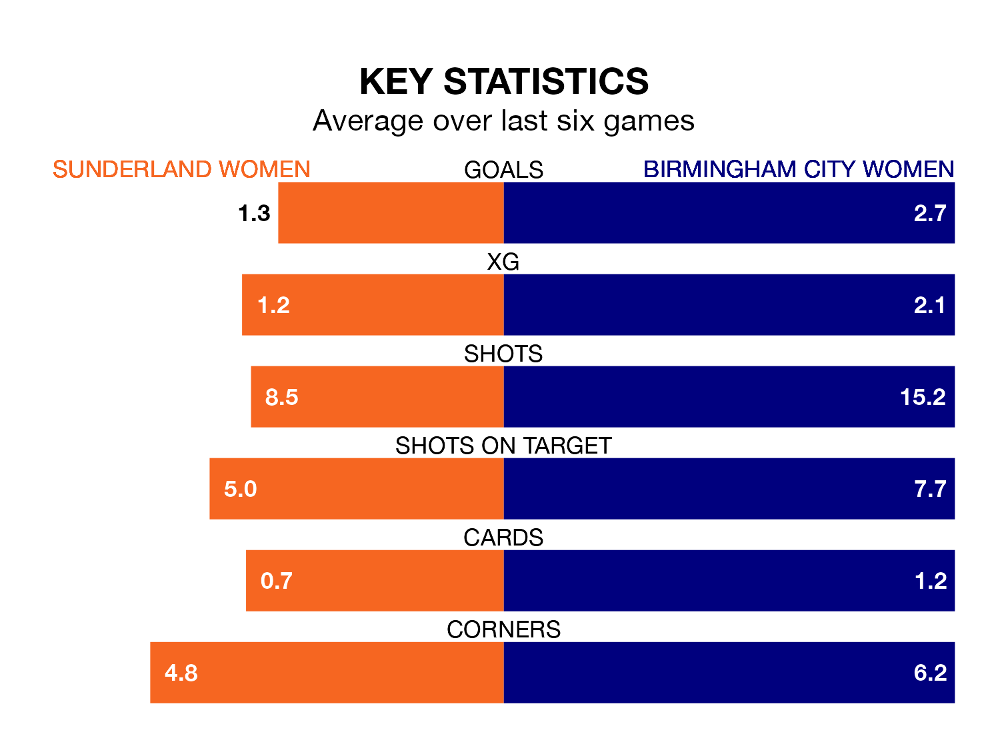

Two of the FA Women's Championship's meanest defences go head-to-head at Eppleton Colliery Football Ground on Sunday, when Sunderland Women host Birmingham City Women.
No teams have conceded fewer goals than Sunderland to date: the home side have let in just six goals in 11 games.
The Blues have conceded 10 goals in 11 games, giving them the third tightest back line so far this season.
Key to Sunderland's home form has been Claudia Moan, who has allowed 0.36 goals past him per 90 minutes, compared to 0.73 for Lucy Thomas in the opposite net.
Sunderland are top of the table after 11 games, of which they have won six and drawn four, earning 22 points.
Birmingham City are four places behind the hosts in fifth, with six wins and two draws putting them on 20 points.
Sunderland are in reasonable form in the FA Women's Championship, with three wins and two draws from their last six games.
With five wins and a draw over that period, the Blues' form is better – they have taken 16 points from 18, compared to Sunderland's 11.
The away side's Lucy Quinn is the league's most creative player, racking up six assists in 11 appearances so far this season.
For the home team, Katie Kitching has set up the most goals, having laid on two assists in 11 games.
In the last five years, Sunderland and Birmingham City have played each other on five occasions. Sunderland won one of them, Birmingham City three, and they drew once.
On average, Sunderland scored 1.0 goal and the Blues 1.8 in those matches.
Their last meeting was on October 8, when they played out a 1-1 draw.
Sunderland's last match was on November 19, a 1-1 draw against Charlton Athletic Women, with Katy Watson getting the goal for Sunderland.
Birmingham City beat Durham Women 3-1 last time out, also on November 19, with Ivana Fuso, Jade Pennock and Remi Allen on the scoresheet.
